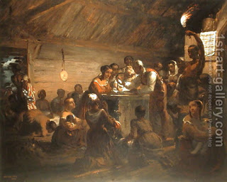

Gittin 9 - Letter of freedom
A divorce document (Get) is essentially a letter of freedom for the woman, for she is now free to marry anyone she wants. In the same way, a Get can be given to a slave, and it will be a letter of his emancipation, reading "You are free," or "You belong to yourself."
The similarity goes further: a woman can bring her own Get to court, and they will use it to effect a divorce, as long as she can tell them that it was written and signed in front of her. So too can do the slave.
However, if in the Get the master says to the slave, "You and all my possessions are yours," then he indeed goes free, because it is similar to a Get of a woman, but the second part, "all my possessions are yours" does not take effect, because for any monetary transaction one needs two witnesses. There are essentially two clauses in this Get, and they work differently.
Now, what happens if the Get says "You acquire all my possessions." Since "all my possessions" includes the slave, he acquires himself and becomes free, and in the same step acquires all the possessions as well. At least this is what Abaye opined.
Rava disagreed. Since the slave did not have two witnesses, he did not acquire the possessions. And since he did not acquire the possessions, he did not acquire himself and is thus still a slave. Rava later changed his mind, but was still dividing the single statement "You acquire all my possessions" into two. This is called severability, but here it is applied to one sentence! They continued to argue about this principle.
Art: The Hour of Emancipation by William Tolman Carlton